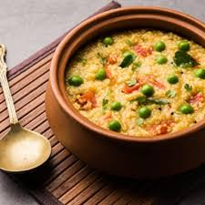

Ingredients:
Daliya (broken wheat) Yellow moong dal (split yellow lentils) Assorted vegetables Ghee or oil Cumin seeds, mustard seeds, asafoetida Turmeric powder, ginger, green chilies Garam masala, salt Water Fresh coriander leaves for garnish
Instructions:
Rinse and soak Daliya and moong dal. Sauté spices and vegetables in ghee or oil. Add drained Daliya and dal, pour in water, and cook in a pressure cooker. Sprinkle garam masala, garnish with coriander leaves, and serve hot.
Daliya Khichadi
Author
Discover the wholesome goodness of Daliya Khichadi, a quick and nutritious Indian dish. This one-pot meal combines broken wheat, lentils, vegetables, and spices for a comforting and balanced option. Perfect for a healthy, satisfying meal.
Daliya (broken wheat) Yellow moong dal (split yellow lentils) Assorted vegetables Ghee or oil Cumin seeds, mustard seeds, asafoetida Turmeric powder, ginger, green chilies Garam masala, salt Water Fresh coriander leaves for garnish
Instructions:
Rinse and soak Daliya and moong dal. Sauté spices and vegetables in ghee or oil. Add drained Daliya and dal, pour in water, and cook in a pressure cooker. Sprinkle garam masala, garnish with coriander leaves, and serve hot.